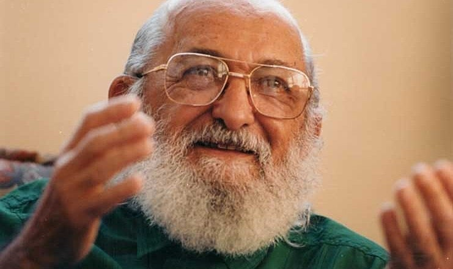
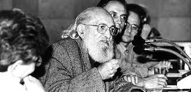

Conheça a vida, as ideias e o legado do educador que transformou a forma de entender a educação no Brasil e no mundo.
Voltar para HomePaulo Freire (1921–1997) foi um educador brasileiro reconhecido mundialmente por sua abordagem inovadora na educação, focada na conscientização crítica e na transformação social. Formado em Direito, dedicou sua vida à alfabetização de adultos e ao desenvolvimento de métodos pedagógicos que valorizam o diálogo e a participação ativa dos estudantes.
Durante a ditadura militar no Brasil, foi preso e exilado, período em que escreveu sua obra mais famosa, “Pedagogia do Oprimido”, que propõe uma educação libertadora, que rompe com o modelo tradicional autoritário, conhecido como “educação bancária”. Seu trabalho influenciou movimentos sociais e sistemas educacionais em todo o mundo, especialmente na América Latina, África e Europa.
Retornando ao Brasil nos anos 1980, Paulo Freire continuou atuando na área educacional até sua morte em 1997, deixando um legado que transformou a forma como entendemos o ensino e a aprendizagem, reafirmando a educação como um instrumento poderoso para a emancipação e a justiça social.

Paulo Freire escreveu obras como “Pedagogia do Oprimido”, “Educação como Prática da Liberdade” e “Pedagogia da Autonomia”, nas quais defende uma educação
baseada no diálogo, na conscientização crítica e na participação ativa dos alunos. Ele critica a “educação bancária”, que trata o estudante como receptor passivo,
e propõe uma pedagogia libertadora que valoriza a experiência dos educandos, estimulando-os a entender e transformar a realidade social. Para Freire, o ensino é um
ato político e ético, onde educadores e educandos constroem juntos o conhecimento em busca da emancipação e justiça social.
Após o golpe militar de 1964 no Brasil, Paulo Freire foi preso e posteriormente exilado devido às suas ideias consideradas subversivas pelo regime autoritário.
Durante o exílio, que o levou a países como Chile, Estados Unidos e Suíça, Freire continuou a desenvolver e difundir sua pedagogia libertadora, conquistando reconhecimento
mundial. Influenciou diversos movimentos de educação popular e reformas educacionais em vários países, consolidando-se como uma referência global na área da educação
crítica e transformadora.

Paulo Freire faleceu em 2 de maio de 1997, em São Paulo. Seu legado permanece vivo nas escolas, universidades e movimentos sociais de todo o mundo. Sua pedagogia humanista e libertadora inspira professores, estudantes e pesquisadores comprometidos com uma educação transformadora e democrática.
Em 2012, foi oficialmente declarado o “Patrono da Educação Brasileira”, um reconhecimento à sua enorme contribuição para o pensamento pedagógico e social do país.